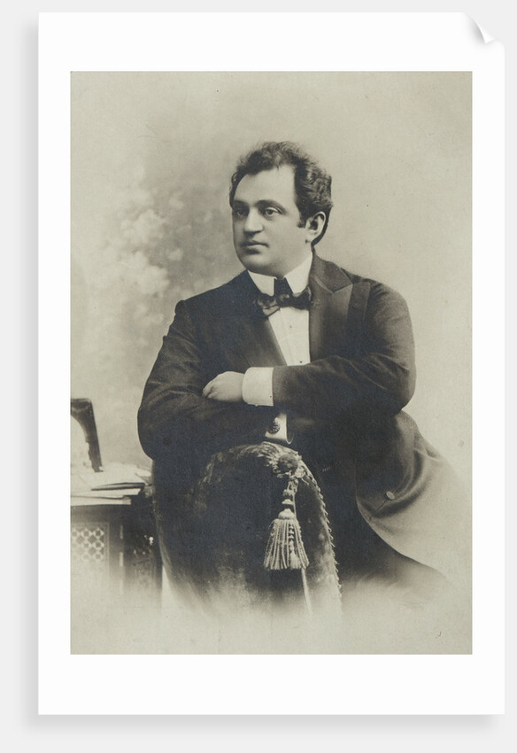

4 September 25th, 1946
Tate’s death shook life of our entire family so much that things could never be as they were. No matter how hard mame tried work hard so that we would not be in need or have to ask for help, she could not make it happen. It never happened. And then the name name “Feige the Possessorka” began to sound like a joke, because a possessor1 is a generally a professional who has means to live well.
When mame lost all interest in running the property as tate had, she left the village and settled in the town of Rybinka, where my sister Bat-sheva lived with her husband. And there, in Rybinka, we opened what is called a “praseach-shtib,”2 where they sell everything that you can think of - even a little drink too. Mame worked very hard in the “general store,” and she was really a great eyses-kha’yel3 and knew how to get along with people. Not only with the Jewish customers, who bought various small things from us, but also with the goyishe customers. She understood who could be given a loan, and who could not. And she behaved such that people in the town had a great respect for her, and they still called her “Feige the Possessorka.”
A possessorka without a possessieh4. Mame couldn’t figure out what to do with me. She was of course sure that a woman - a widow - could still raise her daughters and, as it were, stay on the right path, such that when people see them, they will see beautiful and well-behaved children. But with a son, it was more difficult. Especially with such a little son, who was a bit over-confident and doesn’t show any great desire to learn… Just like tate, mame also wanted me to grow up to be a mensh and to study, if not a lot, at least a little. And because of that, she took me to the Beyala-Tserkov and there she put me in the heder5 of Chaim Machalies, a melamed, because she heard that he, is a very good melamed and that the children of the finest and most honorable families learn from him.
“Look, Shmuel’ik,” she announced to me, “put your head down to study, you will be a scholar. A Jewish boy must be able to learn.”
When we lived in Beyala-Tserkov, I lived with our father-in-law Shmuel Pekelis, the father-in-law of my brother Yitzhik-Gedolia, who was given the nickname “Katik” because he was as quiet as a kitten. Shmuel Pekelis himself promised that they would keep me at home like their own child and that nothing would go wrong. And so it was. They kept me at home like their own child and they took good care of me. But the trouble was, that because I was an orphan6, I was watched over a little too closely. I just had to do one little thing, and I was immediately reprimanded for it:
– This is not acceptable, Shmuel’ik. Not acceptable! Your mother is doing everything so you can be in this heder, and this is how you repay her…
The truth was that I was no ordinary boy. On the contrary, I was actually a quiet boy and I didn’t catch anyone’s eye too much. In addition, I always kept myself very clean and neat, and when someone gave me a new outfit, my eyes really lit up. I preserved it in such a way that it always looked brand new, as if it had come straight off the needle. What’s more - I had a tendency to sing every song that I heard in the street. As soon I heard it and immediately I was singing it. And if the song could be danced to, I danced to it.
And all the people who were so watchful over me did not want me behaving this way, and they scolded me: “What is the big deal with you? And what you doing, dancing in mitzke-deritzke7?” And sometimes they also brought up I am an orphan… An orphan must not sing. An orphan should not be happy.
Also, my brother Yitzhik-Gedolia, the silent “Katik,” used to come from time to time to the Beyala-Tserkov from the village of Solovinke, where he sold grain. He also scolded me and told me how to behave - so that everyone in the home, including his father-in-law and mother-in-law, would be able to say that I was just as quiet as him. And this, in the end, was too much for me, and I couldn’t take it anymore. I also longed for my mother very much, and so I begged him, my silent brother: - Do me a toiva8 and take me back home. I’ve been here enough. I don’t want to be here anymore. I’d rather go to the heder in
I also asked my mame to let me come home. And when they finally gave in to me and they brought me back to Rybinka and I was once again home with my mame, they send me to heder with the melamed Shmuel-Yossel, and this alone meant I could not have any joy; nothing good could come of this. He was an angry Jew, the Shmuel-Yossel. A Jew with a red beard, a broad physique, and with two large, glaring eyes. He did not know how to speak to a student with kindness; He was always angry, the anger always sat in him, just like in a cauldron. And when he had his two big eyes, the glaring ones, focused on a student, it felt like “the value of congealed/hardened mother’s milk”9 and he was overwhelmed with fear.
Thought I wanted to keep the promise I made to my mame that I would study well in the heder at Rybinka, I was unable to do so. It was absolutely impossible to learn anything from such a melamed. We all hated him in the heder. His wife, an overburdened woman, who sold apples in the market, also hated him. And her hatred towards him was not in vain, because there was rarely a day that goes by that he did not beat her. And always, when he hit her, she screamed with loud voices, “Save me, Jewish children! He is going to kill me, the murderer…!” Of course, I could not learn much Torah from such a melamed. Every day in the heder was a punishment for me.
And from that time I remember something, which was strongly imprinted in my memory, and I want to tell it here: This was on a hot summer day, soon after lunch. In the shtetl, there was suddenly a stampede. And when the rabbi went outside to see what was happening there, he immediately ran back inside and shouted at the top of his voice: “Come, shkotsim10, with me!”
In a hurry, he grabbed his kaftan and went out quickly, and we all ran after him, wondering where he is taking us - we were afraid. We followed him and none of us said a word the whole time. And so we went until he led us all into the Beit-Midrash11 and there we saw something I will never forget.
In the middle of a circle of inflamed and very mortified Jews stood a frightened man, Meir the poet, who at that time used to go to a nearby town to pray on Shabbat in front of the pulpit. We knew that he was the son of the Rybinker12 rabbi, and that the Rybinker butcher, Yehial, was his brother. He was a very young man, Meir, and he always behaved as if he had no fear of anyone in the world. This time, however, he stood trembling in fear, and the enraged Jews shouted at him, called him the worst names, and one of them, an angry Jew, slapped him across the face.
– You scoundrel! You ocher-Israel13!
But this was not enough for them, so they also forced him down and lashed14 him. And it didn’t help to wrestle with them; Meir could not stand alone against so many people and he had to accept the punishment that was given to him.
I did not know why the poet received such punishment. The other students in Shmuel-Yossel’s heder did not know either. Only when they released him and handed him over to the hands of his brother Yehiel, the butcher of Rybinka, did we find out that he was accused of some very big crime, a sin against God. That’s what they said in the shtetl. They also said that his friend Leybish was also involved in the crime. The Rybinka rabbi’s son has “modernized” and is out for “bad culture”15. Leybish should have been given the same punishment as befell the poet, but he ran away and nobody knew where he went.
And meanwhile, the whole town went “upside-down”16. Everywhere people talked about this. And my Rabbi Shmuel-Yossel was in “seventh heaven”17 and he did not miss a single opportunity to remind the students in the classroom of what they had seen.
“Nu, shkotsim,” he said, stroking his red beard. “Nu, shkotsim, have you seen what is done to an innocent young man when he commits a sin against God? Ha?… That’s exactly how you will be beaten and cut off, when you commit a sin against God…”
This is why he had led all of us to the synagogue: He wanted us to see it with our own eyes and to remember it…
After that, Meir the poet was ashamed to show his face in the street; he left Rybinka, and he never came back there again… But heard of him again? Yes, indeed we heard a lot.
People must have liked him a lot, because he, Meir the poet, the son of the Rybinker rabbi, later became a famous opera singer on the Russian stage. And he called himself Medvedev18 even then… However, he did not forget when they beat him in the synagogue when he was caught for that offense. And when I met him, many years later, in America, we both laughed a lot when we talked about it. But I will tell you about this when I reach that point…

farmer↩︎
just think of this as a general store - I will use that term moving forward.↩︎
term referring to an “industrious and capable wife”↩︎
“A farmer without a farm.”↩︎
essentially a yeshiva↩︎
his mother is alive, but he still uses this term.↩︎
maybe this means ”middle of the street” in Ukrainian↩︎
literally “a good” - means favor. I’m pretty sure it’s pronounced toiva in Sam’s yiddish dialect, but it’s spelled tova (hebrew).↩︎
well this is quite the idiom..! It’s clearly not a good thing.↩︎
Literally this is some kind of little pastry or meatball, so it is probably an idiom referring to the children↩︎
synagogue↩︎
adjective, of Rybinka↩︎
derogatory term for someone who has greatly sinned↩︎
as in whipped↩︎
specifically implies he has heavily assimilated, left the orthodoxy↩︎
“topsy-turvy”↩︎
This is in fact a Jewish phrase/concept - there are seven levels of heaven.↩︎
Mikhail Efimovich Medvedev, né Meir Haimovich/Yefimiovich(?) Bernshtein. Here is another source.↩︎